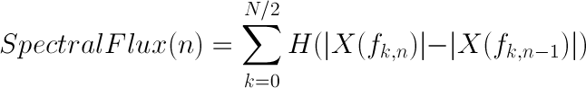
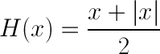

Intelligent Audio Systems
Jeremy Sawruk
January 8, 2013
Jeremy Sawruk
January 8, 2013
One method to detect onsets is to use spectral flux.
Spectral flux measures how quickly a spectrum changes.
Spectral flux is locally maximized near onsets.
This allows us to find onsets by computing the spectral flux and then finding local maxima (peak picking).


Zero Crossing Rate (ZCR) is a measure of how many times the signal crosses the y axis.
It is a crude estimator of pitch and harmonic content.
A higher ZCR implies a higher pitch and/or more complex harmonic content.
Its main advantage is that it is fast to compute.
| Artist | Rock % Match | Classical % Match |
|---|---|---|
| Black Sabbath | 92.43% | 7.57% |
| Foo Fighters | 97.35% | 6.25% |
| Green Day | 95.44% | 4.56% |
| Claude Debussy | 12.75% | 87.25% |
| Maurice Ravel | 11.50% | 88.50% |
| Franz Schubert | 20.33% | 79.67% |
Bold = Training set
Special Thanks to Jay LeBoeuf and Steve Tjoa of iZotope for technical consultation.